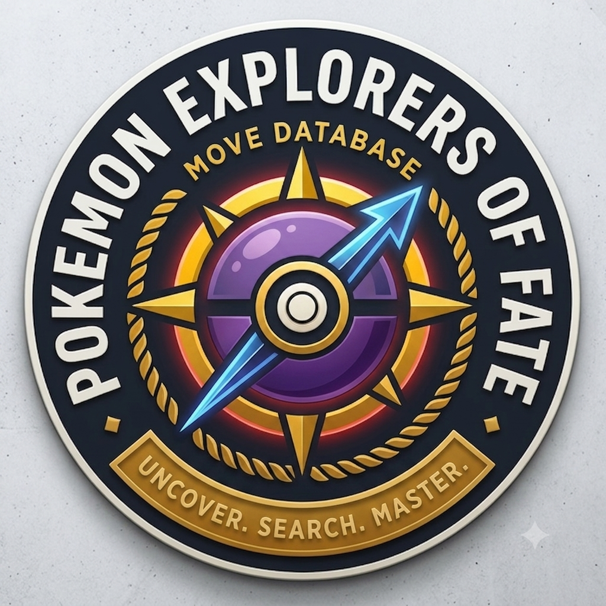
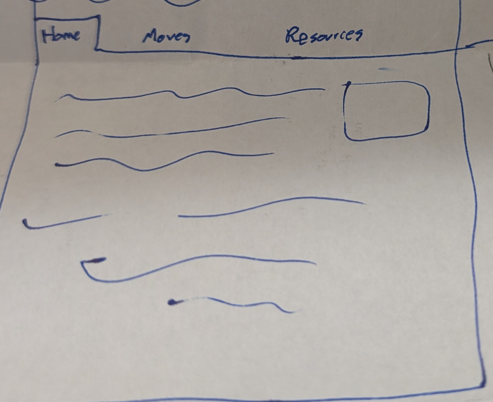
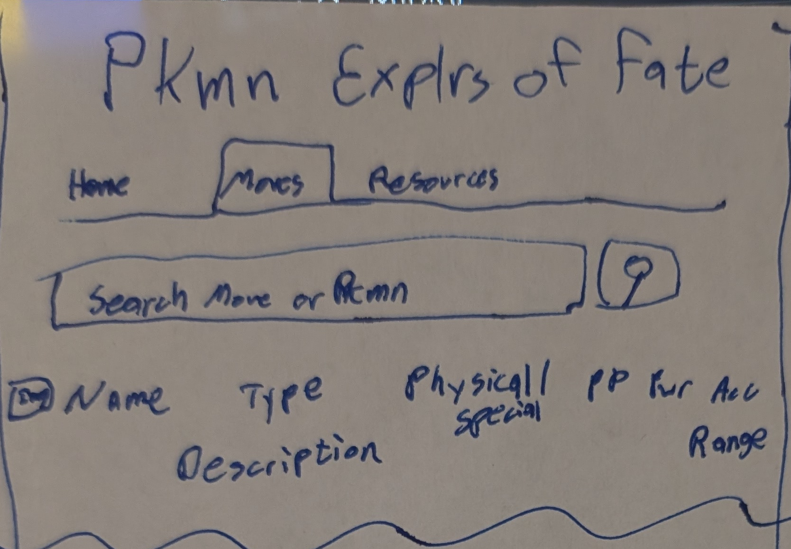
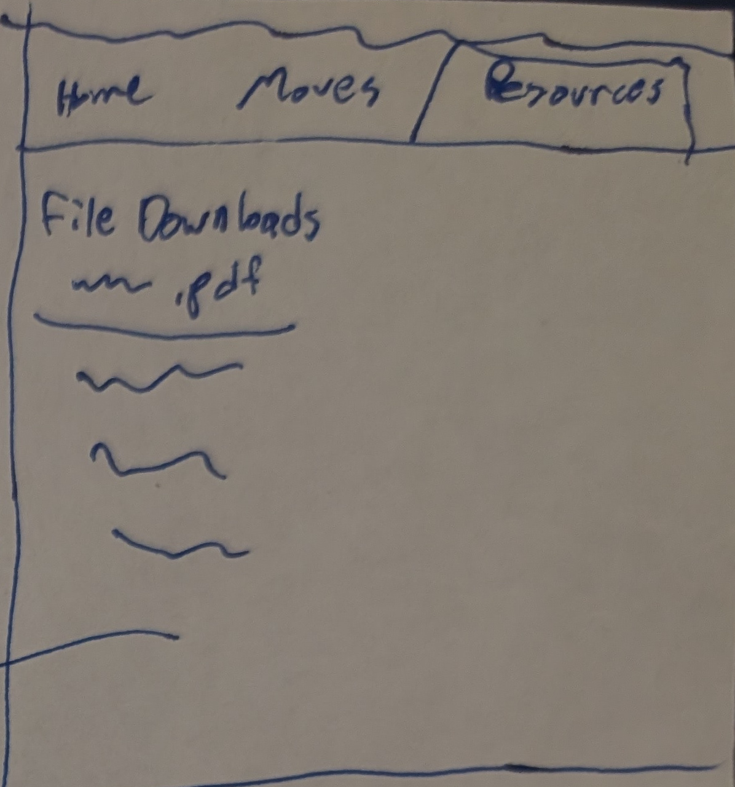

Overview
Purpose
To create an informative website about Pokemon Explorers of Fate and to create a searchable move database that calls its info from a public pokemon API
Audience
Primary audience: Pokemon fans and gamers interested in exploring the game's mechanics and strategies.
Dynamic elements
Calling an API to fetch Pokemon data and displaying it in a searchable move database.
Branding
Website Logo

Style Guide
Color Palette
Palette URL: https://coolors.co/1e232a-f4f6f9-ff5a5f-ffcb05-7d52a0| Primary | Secondary | Accent 1 | Accent 2 | Accent 3 |
|---|---|---|---|---|
| [#1E232A] | [#F4F6F9] | [#FF5A5F] | [#FFCB05] | [#7D52A0] |
Pseudocode for your project
1. Create a search bar for users to input a move or pokemon name
2. When the user submits the search, call the public pokemon API with the input value
3. Fetch the data from the API and display it on the page in a user-friendly format
4. Allow for both move entry or pokemon entry with the pokemon entry listing all moves the pokemon can learn
5. Implement error handling for invalid inputs or failed API calls
Wireframes
Landing page
All 3 pages will have a similar layout with the move database page.

Move Database
Search bar that users can type a move or a pokemon into to see it on screen

Resources
Simply a download page for users to download the game and any other resources they may need
